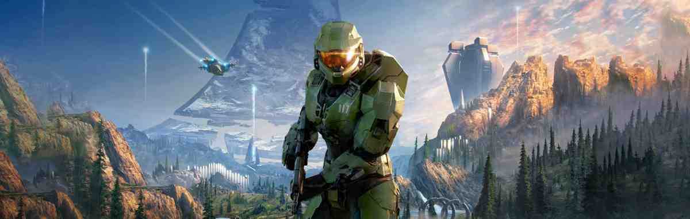

Juegos en Espera:
- - Resident Evil 9 : 2025
- - GTA VI : Otoño 2025
- - Far Cry 7 : Otoño 2025
- - The Elder Scrolls 6 : 2026
- - Pokemón Legends Z-A : 2025
- - The Witcher 4 : 2026-2027
- - Half Life 3: Yoandri DLC : 32/13/7024
- - Ajedrez 4: Yoandri vs Hitler : 34/14/9025
- - Assassins Creed Shadows : 14/2/2025
- - Halo Combat Evolved Remake : Otoño 2025
- - Project Orion (secuela de cyberpunk) : 2078
Apuestas para el Goty 2024

Astro Bot
Votaron:

Balatro
Votaron:

Black Myth: Wukong
Votaron:

Yoansito15

CYBERGHOST10

Tomioka

Elden Ring: Shadow of the Erdtree
Votaron:

Derek10

Final Fantasy VII Rebirth
Votaron:

Metaphor: ReFantazio
Votaron:
Ganador del Goty
Astro Bot